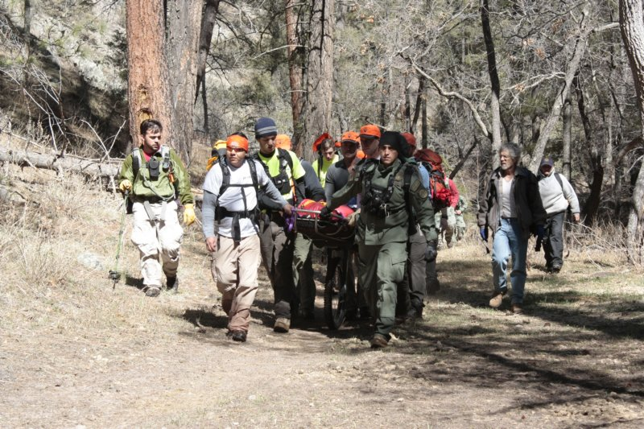
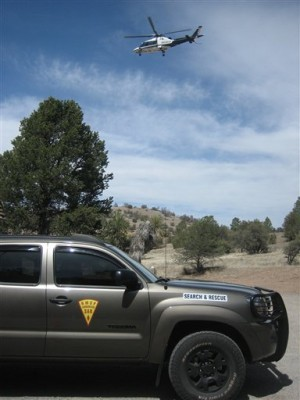

2012 Missions
Many teams and incident base staff have participated in the following missions. In our area there are other great teams that regularly participate in missions. What we have reported here is what we saw and in no way do we intend to take full credit for any of these missions.
Mission #: 12-08-02
Date: January 16, 2012
Location: White Sands National Monument
Subject: Male Hiker
Mentally challenged, 15 y/o old walked away from family. Subject was found in good condition prior to the arrival of Socorro SAR.
Mission #: 12-00-01
Date: February 25, 2012
Location: Brantly Lake State Park
Subject: Male Camper
Continuation of Mission # 11-03-02 where the subject walked away from camp durring night. The subject was presumed to be out of the area. The remains of the subject were found by hikers on November 14, 2012.
Mission #: 12-12-04
Date: March 6, 2012
Location: Railroad Canyon, Gila National Forest
Subject: Female Camper
A 41 y.o. female was reported missing Feb 14. Her vehicle was loacted near the trailhead in Railroad Canyon and a mission was initiated on March 6th. Subject was found approx. 1-1/2 miles up the canyon. Subject had consumed all her food but was still able to drink water from the stream. Subject was carried out on a litter and transportered to the hospital. Her pet cat was able to forage for food and was healthy. The cat was transported with subject and temporary housing was arranged.

Photo courtesy of Grant County SAR
Mission #: 12-06-03
Date: March 20, 2012
Location: El Malpais National Monument
Subject: Male Driver of Vehicle
Subject was a missing 61-y.o. male driver of a broken down vehicle who went to find help. Subject's girlfriend was located with the vehicle by law enforcement prior to the start of the mission. Search was called off when additional information about circumstances behind disappearance became known. IB was established and teams were in route when mission was called off.
Mission #: 12-12-05
Date: March 27, 2012 through April 1, 2012
Location: Gila Wilderness, Gila Cliff Dwelling National Monument
Subject: Male Hiker
58 y.o. male runner staying at the Wilderness Lodge at Gila Hotsprings did not return from a 12 mile run on 3/27/12. Subject did not provide any information on planned route and was last seen running on NM Hwy 15 leaving Gila Hot Springs towards the Gila Cliff Dwellings. After a 4 day search involving 16 teams and 5 aircraft from 3 agencies the subject was found deceased. Socorro Search and Rescue participated on March 28 and 30.

Photo courtesy of Grant County SAR
Mission #: 12-12-07
Date: April 26, 2012
Location: Gila Wilderness, Gila Cliff Dwelling National Monument
Subject: Male Hiker and Female Hiker
A 60 y.o. male and 60 y.o. female decided on 4/25/12 to hike up to the the Jordan Hot Springs for the day. SAR teams were out searching thru the night and located the subjects and owners of the vehicle left at TJ Corral. Turns out the subjects were out backpacking and did not leave an itinerary with anyone and were fine. The reporting party had confused the owners of the vehicle with a different couple who were the ones out for a day hike.
Mission #: 12-11-02
Date: June 9, 2012
Location: Gila National Forest
Subject: Male Hiker
A 62 y.o. male hiker got separated from hiking partner while looking for antlers. Subject went missing at 12:00 on June 8, 2012 and a mission was initiated. Subject was located by an ATV team at 08:00 on June 9th in good health and returned to IB, debriefed and released.
Mission #: 12-11-03
Date: September 13, 2012
Location: Gila National Forest
Subject: Male Hunter
A male hunter failed to return to camp after being out in the field. A mission was initiated around 12:00. Subject walked into camp around 15:00 while resources were en-route.
Mission #: 12-06-07
Date: September 21-22, 2012
Location: Cibola Natonal Forest near Bluewater Acres
Subject: Male Hiker
A 50 y.o male was last scene on September 19. On September 20 the subjects girlfriend was able to locate his vehicle but was unable to find him in the immediate area. A search was started just before 00:00 on September 21. Socorro SAR responded for the 2nd operational period at 16:00 on September 21 and was on-scene through 09:30 on September 22. Search was called off on the evening of September 22 and the subject was presumed to be out of the area.
Mission #: 12-06-08
Date: December 1. 2012
Location: Homestead Canyon, Cibola County, NM
Subject: Male Hiker
A 76 y.o male was last seen on November 30 around 13:30 hrs. On November 30, the search was initiated and went through the night. Socorro SAR arrived at 06:30 on December 1 for the start of the 2nd operation period. ABLE 6 arrived on-scene at approximately 07:15 and began searching the area. Subject was located outside the main search area by ABLE 6 at approximately 10:00 on December 1. Subject was returned to IB by a state police officer and ultimately transported by SAR volunteer to the local hospital for evaluation.